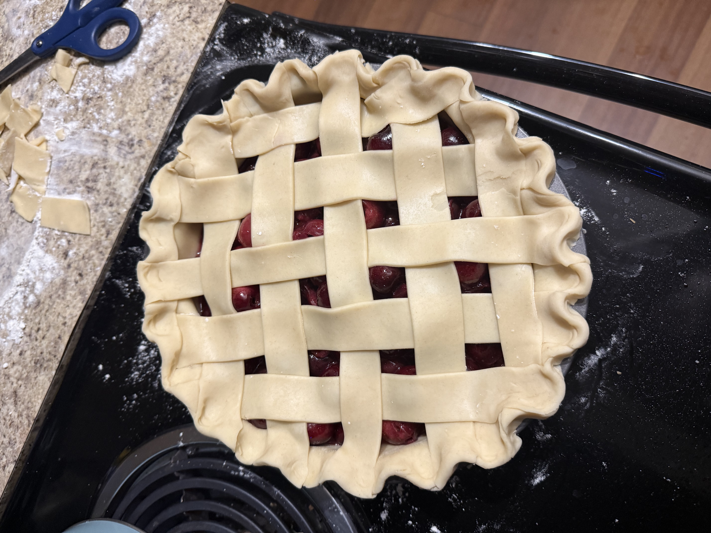

Ingredients
- 1 pie crust
- 2 pounds (about 5 cups) fresh cherries, pitted
- 1/3 cup granulated sugar
- 2 Tablespoons corn starch
- 1/4 teaspoon salt
- 1/2 teaspoon cinnamon, optional
- 2 teaspoons vanilla extract
- 1 egg (for egg wash)
💡 Tip: Click ingredients to check them off as you gather them!
Instructions
- Prep the Crust: Prepare two pie crusts according to directions. If using homemade pie crusts, make sure you have two–one for the bottom and one for the top lattice!
- Preheat Oven: When ready to make your pie, preheat the oven to 400° F.
- Cook Cherries: In medium pot over medium heat, combine half of the pitted cherries with the sugar, salt and 1 Tablespoon cornstarch. Cook the cherries down, stirring constantly until the cherries have broken down and are a jam consistency, about 8 minutes. Remove from the heat and stir in the vanilla and cinnamon if using.
- Add Cornstarch: Mix the cooked down cherries, and the remaining 1 Tablespoon of cornstarch with with the uncooked cherries. Set aside.
- Assemble the Pie: Roll out the bottom pie crust on a floured work surface, to 1/4 inch thickness. The circle should be larger than your pie pan circle (ie: if your pie pan is 9 inches, make the circle 11 inches). Carefully place dough into pie pan, pushing into the pan, leaving the overhang over the edges. Spoon the filling into the pie crust.
- Create the Lattice Work: Roll out second pie disk into a circle big enough so it reaches the edges of the pie pan. Cut dough into strips. We cut our dough into equal width strips, but feel free to vary! Weave the threads over and under each other, draping the edges over the bottom pie crust. Have fun with it–it doesn’t have to be perfcet! After you’re done weaving the lattice, pinch the bottom and top crusts together and roll the edges in towards the pie to seal the pie. Flute the edges of the pie and smooth out any imperfections.
- Egg Wash, Bake, and Cool: In a small bowl whisk together the egg with 1 Tablespoon of water to make an egg wash. Use a pastry brush to evenly brush the pie. Bake at 400°F for 15 minutes. After 15 minutes, turn the oven down to 375°F and bake for another 30 to 45 minutes or until the cherry filling is bubbling and the crust is golden brown. Allow to cool completely before serving with ice cream or whipped cream!
